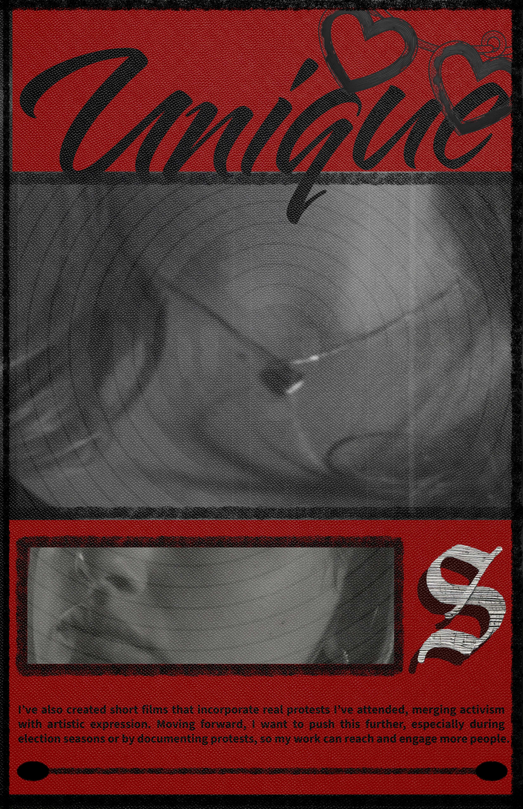
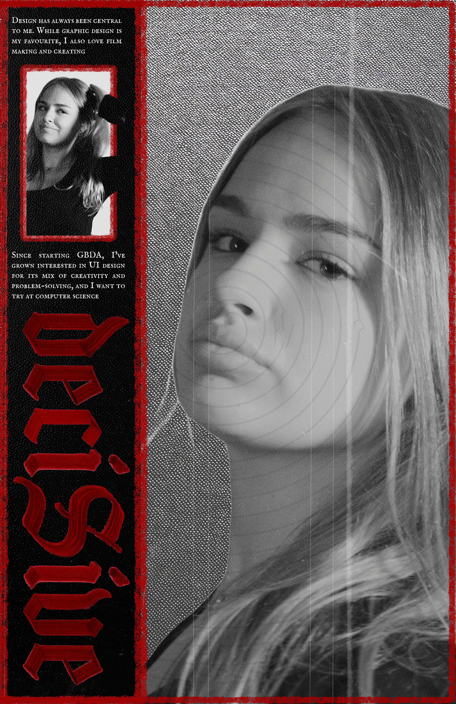

Good Design
Magazine
A magazine-style visual project exploring what good design means to me personally through portrait imagery, typography, and bold editorial layouts.
About the Project
Good Design is a magazine-inspired project where I explored my personal philosophy of design through layout, image treatment, typography, and visual storytelling. I wanted the work to feel raw, expressive, and memorable while still looking carefully designed.
The pages use black, white, and deep red tones with distressed textures, layered type, cropped imagery, and collage-style compositions. This helped create a strong visual mood that feels both personal and editorial.
This project shows my interest in graphic design that communicates emotion and attitude. It also reflects the kind of creative direction I enjoy most: work that feels bold, intentional, and visually distinctive.
Project Details

Design Process
Concept
I began by thinking about how to make a magazine page feel emotionally charged and visually personal. I wanted the project to communicate personality while still feeling like a polished editorial piece.
Visual Style
The design direction came from contrast: soft portrait photography against sharp red graphics, expressive script text against structured layouts, and clean compositions mixed with distressed textures.
Layout Choices
I experimented with scale, collage, and framing to guide the viewer through each spread. Cropping and layering helped turn the portraits into graphic elements rather than just photos on a page.
Outcome
The final result is a magazine project that visually communicates my idea of what good design can be: expressive, intentional, and visually powerful. It highlights my ability to build a strong concept and carry it through multiple pages in a consistent way.



What This Project Shows
Reflection
This project allowed me to explore my own definition of good design while working in an expressive and experimental editorial format. It pushed me to think about how visuals can communicate identity, attitude, and message all at once. This project reflects a side of my work that is more graphic, conceptual, and editorial, and it shows how I like to bring personality into design.